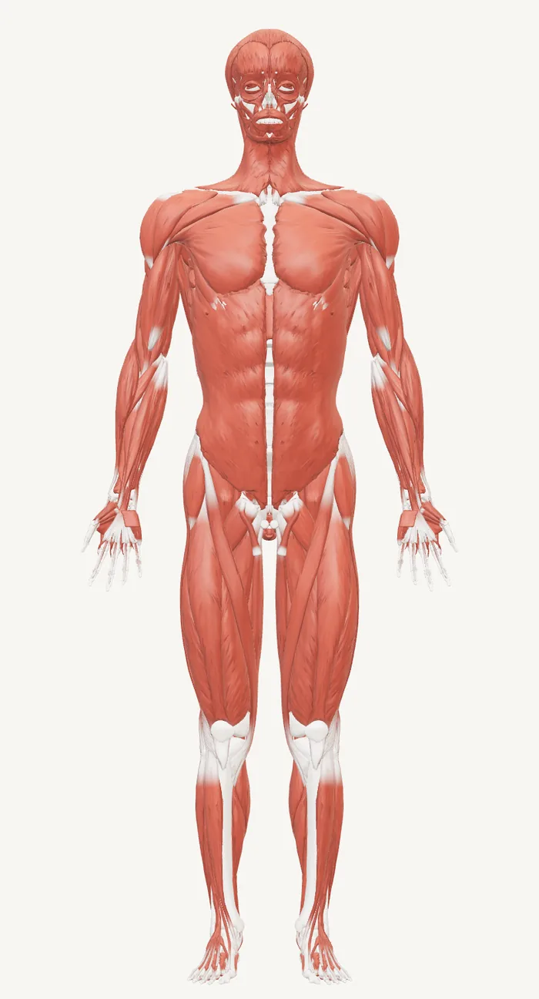
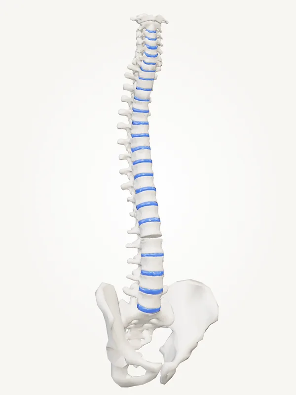

ABmoment, Bruxelles
Centre de kinésithérapie et de bien-être à Schaerbeek
Kinésithérapie, ventouses, techniques ostéopathiques, pressothérapie, massothérapie et neuropsychologie, réunies dans un même centre.

Des soins pour tout le corps
Une approche globale qui associe techniques modernes et traditionnelles, adaptée à chaque patient : sportifs, personnes souffrant de douleurs ou simple besoin de récupérer.
Kinésithérapie
Rééducation et traitement des douleurs musculaires et articulaires, après une blessure, une opération ou en cas de douleurs installées.
DécouvrirThérapie par ventouses
Technique traditionnelle qui aspire doucement la peau pour relâcher les tensions musculaires et favoriser la récupération.
DécouvrirTechniques ostéopathiques
Mobilisations et techniques manuelles de déblocage articulaire pour retrouver de l’aisance dans le mouvement.
DécouvrirPressothérapie
Des bottes à compression pneumatique massent les jambes par vagues successives, pour une sensation de légèreté.
DécouvrirMassothérapie
Massages de détente ou massages sportifs, adaptés à vos tensions et à votre rythme.
DécouvrirNeuropsychologie
Bilans de la mémoire, de l’attention et de la concentration, et accompagnement adapté.
Découvrir
Le centre
Le savoir-faire, l’écoute et la précision
Un centre lumineux et apaisant à Schaerbeek, où chaque patient est pris en charge dans sa globalité : sportifs, personnes qui souffrent de douleurs, ou simple besoin de récupérer.
« Le corps s’apaise lorsque l’on écoute enfin ce qu’il murmure. »
Une équipe de spécialistes
Deux kinésithérapeutes et une neuropsychologue, réunis par Aydin Bozok, fondateur du centre.
Simon Cano
Rééducation, douleurs musculaires et articulaires, récupération après une blessure : Simon vous accompagne avec un suivi adapté à votre corps et à vos objectifs.
Voir l'équipe KinésithérapeuteJulie Thiebaut
Julie prend en charge vos douleurs et votre rééducation avec écoute et précision, pour vous aider à retrouver une mobilité confortable au quotidien.
Voir l'équipe NeuropsychologueKubra Bozok
Kubra réalise des bilans neuropsychologiques et accompagne les patients dont la mémoire, l'attention ou la concentration posent difficulté.
Voir l'équipePrenez rendez-vous
Appelez le centre ou contactez directement votre praticien, par téléphone ou WhatsApp.